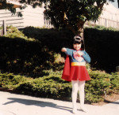
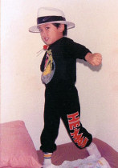

Jen and Mark
 July 21, 2007
July 21, 2007

How it all Happened...
He said: "She wanted me from the moment she saw me!"
 She said: "Ugh! A lady never chases a boy. He wanted me, and did everything he could to get me!"
The truth: Maybe a little bit of both... We met on our second day of college at a Filipinos in Liberal Arts and Humanities (FILAH) meeting. They were holding salsa lessons and we were partners. After much twirling and hip-rocking, Mark walked me home.
Three years later Mark was elected president of Mga Kapatid, the Filipino-student association at UC Davis, and I was elected his secretary. We worked really closely with each other on several school events. After a while, I got to know him as more than just a class clown who wore neon orange jumpsuits and zipper earrings in his ear. He was actually very smart, confident and sincere.
 It's nice to know that Mark and I were friends before we were a couple. However, it does put a downer on the courting portion of our relationship. He knew he couldn't pull the same tricks he's done with other girls because I already knew of them when he'd done it. There was no recycling happening with me! That just meant that I demanded and deserved creativity – nothing more than any other girl would expect, no?
In the end, it must have been worth it because here we are five years later � turning 26 and getting married.